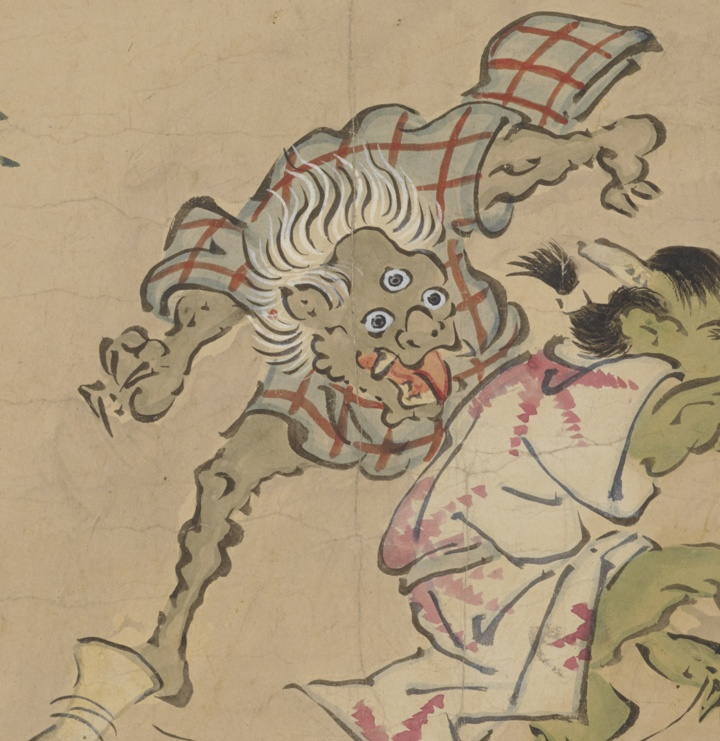

← 图鉴索引

三つ目の妖怪。格子縞の着物。灰色の体。凧揚げを見ている。
著作者：英一蝶／出典：親書誌：U426_nichibunken_0449：妖怪四季風俗絵巻／日付：2019／資源識別子：U426_nichibunken_0449_0001_0002
Copyright (c)2010- International Research Center for Japanese Studies, Kyoto, Japan. All rights reserved.